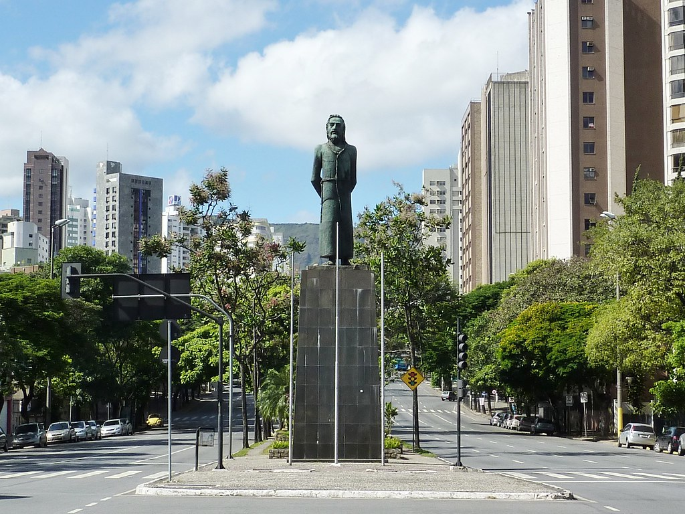
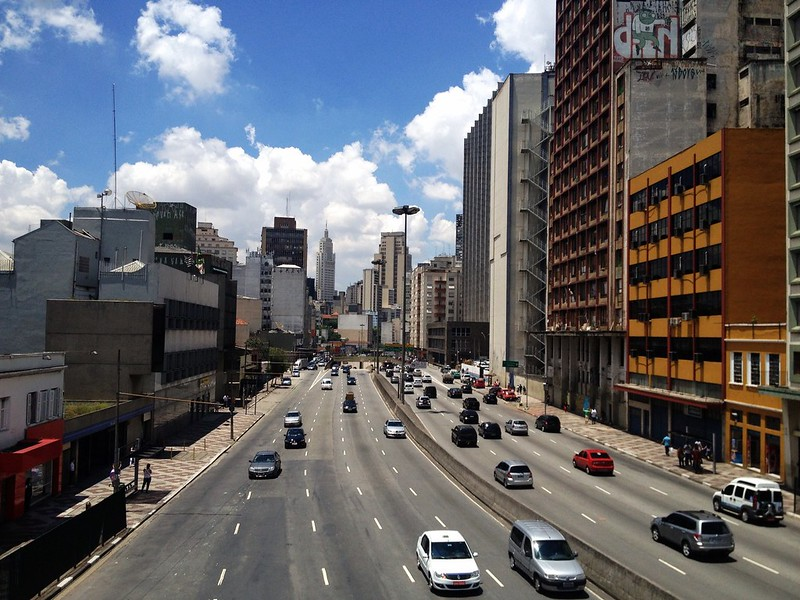
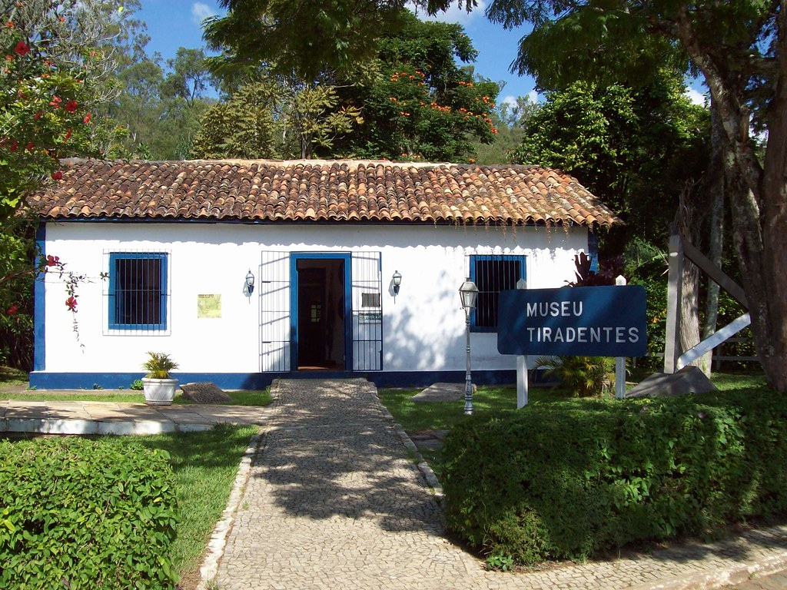
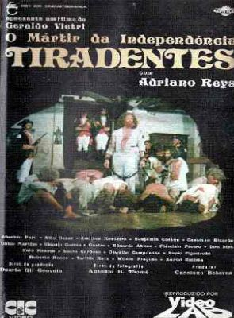
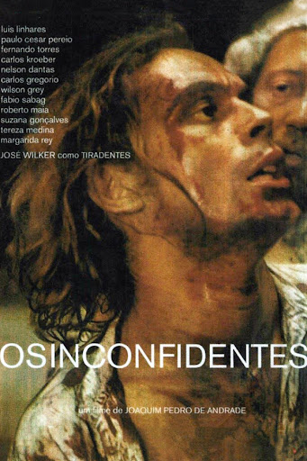
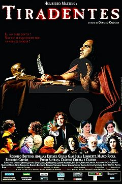

Tiradentes: A História
Homenagens
Estátua de Tiradentes:
A estátua em bronze de Tiradentes, de autoria do artista João Turin, está localizada na Praça Tiradentes. Quando foram retirar a estátua para restaurá-la, em 2013, foi encontrada uma garrafa com manuscrito datado de 25 de janeiro de 1932 que relata a mudança de posição do monumento e revela a existência de uma nova cápsula do tempo sob o pedestal do monumento na Praça Tiradentes. Dentro dessa nova cápsula conteria uma edição do jornal O Dia do ano de 1927, assinaturas e moedas de cobre e níquel.
Cidade:
Povoada a partir de 1702, a cidade de Tiradentes, na região Central de Minas Gerais, homenageia em seu nome o alferes Joaquim José da Silva Xavier. A cidade tornou-se um dos centros históricos da arte barroca do Brasil, ganhando muita importância por ter sido bem preservada, e tornando-se também uma atração turística. Ainda hoje a cidade possui muitos exemplos da arquitetura do século XVIII.
Avenida:
Em São Paulo, Tiradentes dá nome a uma das mais importantes avenidas da cidade que liga o Centro à Zona Norte e, junto com outras avenidas. A avenida de 1,8 km de extensão abriga importantes construções da cidade, como a Pinacoteca do Estado, o Parque da Luz, o Batalhão da Rota e a estação Tiradentes do Metrô.A Avenida Tiradentes ganhou este nome em 1916, quando foi inaugurada. A via começou a ser construída por Antonio da Silva Prado, primeiro prefeito de São Paulo no período republicano. A avenida era até então conhecida como Estrada Real de Guarepe, nome de um pequeno rio que corria por ali.
Museu Sacro-Histórico de Tiradentes:
O Museu Sacro-Histórico Tiradentes é uma pequena casa, nos arredores da Estrada Imperial, que guarda relíquias do “herói nacional”. Inaugurado em 1972, o acervo está distribuído por cinco salas e possui peças como réplicas de fardas do alferes, a maleta de dentista que ele usava e uma pia inglesa de metal que pertenceu a sua suposta amante, Dona Mariana. Protegidos por uma redoma de vidro, os ossos do mártir estão expostos ao lado de pedaços do caixão da amante.
Obras Cinemátograficas
Inconfidência Mineira:
Inconfidência Mineira é um filme brasileiro de 1948, dirigido por Carmen Santos.O filme conta, de forma heróica dos aconteciementos em Vila Rica que levaram Joaquim José da Silva Xavier à morte na forca pela participação no movimento que ficou conhecido como a Inconfidência Mineira.
Tiradentes, o Mártir da Independência:
Tiradentes é uma figura famosa no processo de independência do Brasil. Ele conta a vida deste popular herói nacional desde os primeiros momentos em que dirigiu a revolta até os últimos dias com ele. a forca, depois de traída por Silvério dos Reis, foi originalmente uma companheira de luta do movimento da Inconfidência.
Os Inconfidentes:
O filme retrata a Inconfidência Mineira, movimento político mineiro do século XVIII. Poetas e nobres faziam parte de uma conspiração contra o domínio colonial português, incluindo um padre (Carlos Gregorio) e um coronel da guarnição. O dentista José Wilker foi escolhido para dar o exemplo aos rebeldes contra a família real portuguesa. Embora seus cúmplices tenham se declarado culpados, eles não são responsáveis. A única pessoa que fez isso foi Tiradentes, que acabou sendo condenado à morte.
Joaquim:
O que fez Joaquim José da Silva Xavier, um dentista comum de Minas Gerais, se transformar em Tiradentes, um importante herói e mártir nacional, que liderou o levante popular chamado Inconfidência Mineira.
A colônia brasileira fazia parte do Império Português e a produção de ouro diminuiu. A minoria portuguesa governou uma sociedade composta principalmente por escravos africanos, povos indígenas e raças mistas de forma autocrática e corrupta. Joaquim é um soldado notável, ele espera que sua dedicação seja recompensada com a patente de tenente, para que possa comprar a liberdade da Preta que ama. A promoção nunca veio, nessa época, Joaquim recebeu uma tarefa perigosa: encontrar uma nova mina de ouro no terrível Sertão Proibido. Perceber isso será a única maneira de obter promoção e a liberdade de seus entes queridos.
Tiradentes - 1999:
Este filme mostra uma perspectiva bem diferente dos filmes tradicionais, sobre os fatos políticos envolvendo a Inconfidência Mineira e a condenação dos conspiradores. Joaquim José da Silva Xavier, conhecido como Tiradentes, será condenado à morte por ser o único rebelde que não possui muitos bens. Por outro lado, grande parte da elite de Ouro Preto participou do levante, inclusive o próprio visconde de Barbasena, mas a maioria não foi acusada ou mesmo presa. Um ponto interessante, mas é apoiado por muitos estudos recentes
Galeria

A estátua em bronze de Tiradentes na Praça Tiradentes, ponto central de Ouro Preto.

Cidade de Tiradentes, na região Central de Minas Gerais.

Avenida Tiradentes em São Paulo

Museu Sacro-Histórico Tiradentes.

Filme:Inconfidência Mineira, 1948.

Filme: Tiradentes, o Mártir da Independência.

Filme: Os Inconfidentes.
Filme: Joaquim.

Filme: Tiradentes.